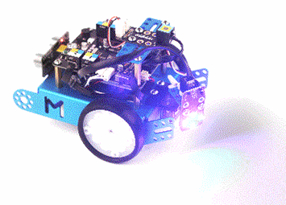

En la práctica de este tema, tendremos que crear una base motriz.

(1) x Placa Arduino
(1) x Protoboard
(1) x Módulo Control Remoto IR
(1) x Mando A Distancia
(1) x Servomotor
(2) x Motor Paso A Paso
(1) x LED RGB
(-) x Resistencias
(-) x M M cables (cables de puente de macho a macho)
(1) x Estructura del robot MBot.
Además se podrá utilizar cualquier otro componente visto ya anteriormente para darle sentido al montaje.
El objetivo de esta práctica es la de crear una base motriz que sea capaz de moverse con el mando a
distancia.
También tendremos en la parte de alante un faro (LED RGB) orientable mediante un servomotor.
Programaremos el mando a distancia para que mediante los botones seamos capaces de dirigir la base motriz.